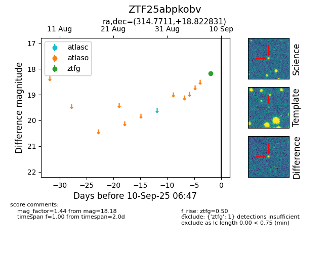

FINK: ZTF25abpkobv
Lasair: ZTF25abpkobv
ALeRCE: ZTF25abpkobv
ZTF25abpkobv (ztf,fink)
equatorial (ra, dec) = (314.7711,+18.82283)
galactic (l, b) = (65.6056,-17.34817)

last ztfg=18.18, ztfr=17.92
1 ztfg, 1 ztfr detections